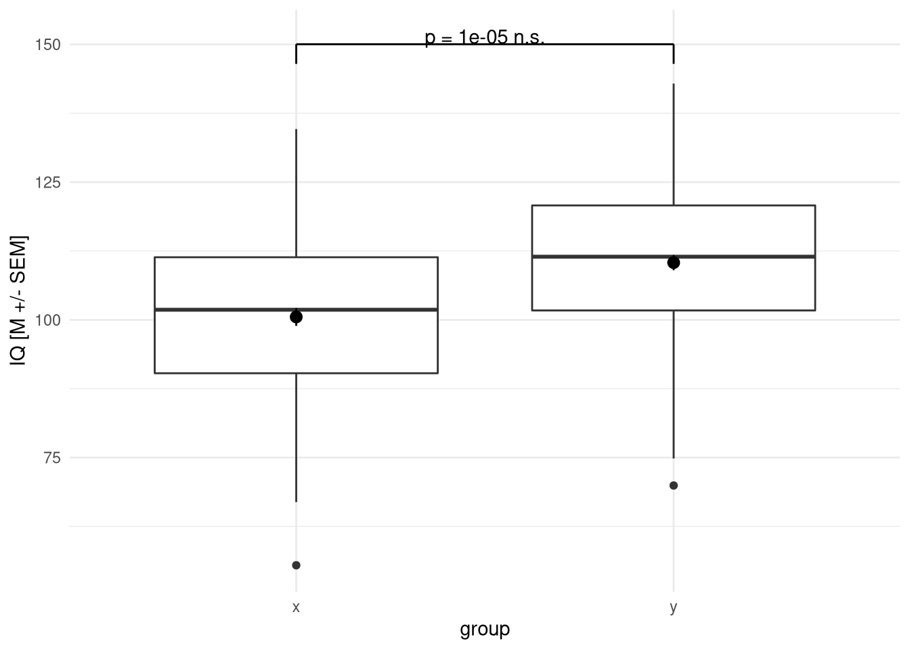
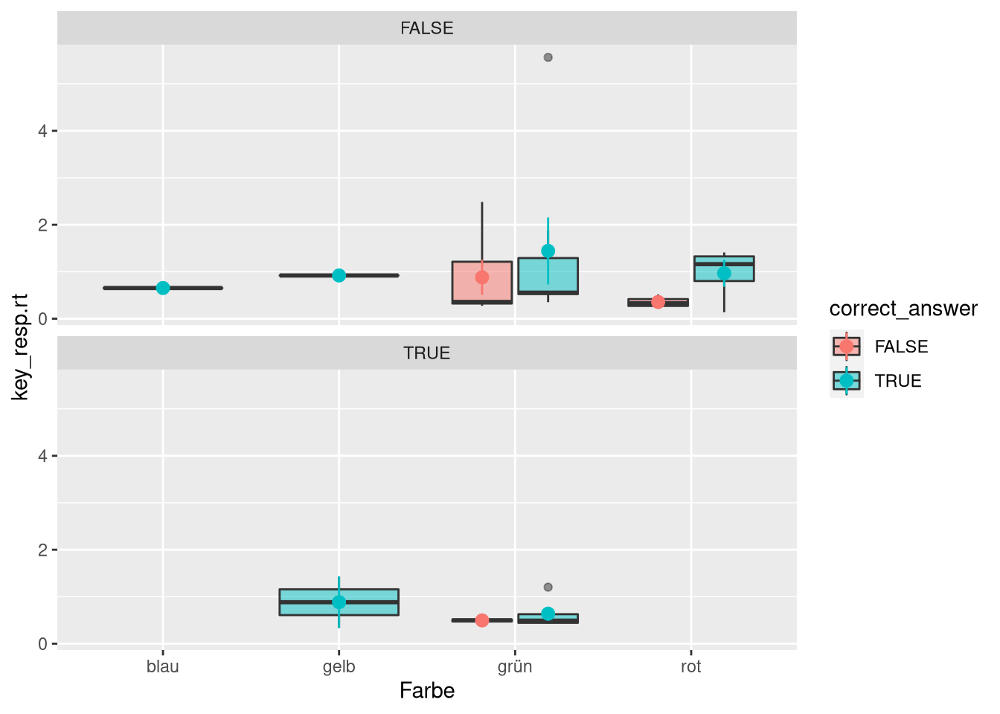

Experimente in Psychopy
Psychopy ist ein auf der offenen Programmiersprache Python basiertes Open Source Tool zur Erstellung und Durchführung von Experimenten. Seit Version 3 ist außerdem Unterstützung für Pavlovia hinzugekommen, die den Code in Javascript umwandelt und damit Browser-basiert und vor allem online lauffähig macht.
Das Tool kommt dabei mit einem “Builder” und einem “Coder” zum Erstellen von Experimenten und dem “Runner” zum Ausführen dieser. Die Drag-And-Drop Oberfläche des “Builders” (Abb. 1) stellt das Experiment als Zeitstrahl dar, und ist das Tool, das wir hauptsächlich nutzen werden.
Abb. 1: Builder-Ansicht von Psychopy.
Im Coder (Abb. 2) kann das mit dem Builder per Drag-And-Drop erstellte Experiment dann mit direktem Python-Coding angepasst werden. Python ist zwar an vielen Stellen ziemlich ähnlich zu R, wir werden aber so weit möglich vermeiden die Skripte im Coder anzupassen, vor allem auch weil der Plan ist, die Experimente über Pavlovia gehostet durchzuführen. Das Umwandeln von Custom-Python-Code zu JS funktioniert zwar besser als man vielleicht denkt, aber nicht perfekt und wenn man sich sparen möchte, händisch Python in JS zu übersetzen, empfiehlt es sich, möglichst auf den Coder zu verzichten.
Abb. 2: Coder-Ansicht von Psychopy.
Das letzte Fenster ist das “Runner”-Fenster (Abb. 3), in dem Experimente gestartet werden können, dazu aber später mehr.
Abb. 3: Runner-Ansicht von Psychopy. Die Fehlermeldung unten liegt an meinem Setup, stört uns aber nicht weiter.
Stroop
Wir wollen das folgende Experiment bauen und auf Pavlovia hosten: Einfache Stroop-Task
Es handelt sich um eine abgewandelte Version der Stroop-Task. Die Probanden sollen also bei einem in einer Farbe dargestellten Schriftzug, der ein Farbwort angibt, per Tastendruck mitteilen, welche Farbe das Farbwort hat.
Textelemente
Als ersten Schritt zu diesem Ziel erstellen wir das Farbwort und die zu drückenden Tasten als Text-Stimuli.
Dazu erstellen wir einfach mit dem “Text”-Item im rechten Menü unter Stimuli vier Text-Stimuli im schon geöffneten Trial (Abb. 4).
Abb. 4: Anlegen von 5 Text-Stimuli. Das spätere Stimulus-Item wird mit “Platzhalter” als Inhalt initiiert, die vier Hinweise für das Antwort-Format mit einer Zahl (der zu drückenden Taste) und dem entsprechenenden Farbwort darunter initiiert.
Das Ergebnis ist erstmal nicht besodners schön. Wenn wir das Experiment laufen lassen (Mit Klick auf den “Run” Button: Abb. 5), können wir uns den bisherigen Trial angucken.
Abb. 5: Run-Button.
Wie man in Abb. 6 sehen kann, ist das Experiment bis hierhin nicht besonders schön.
Abb. 6: Experiment bis zu diesem Moment.
Als ersten Schritt um das zu verbessern, ändern wir Größe und Position der Tasten-Labels, so dass sie kleiner und am Bildschirmrand zu sehen sind. Die Positionen auf dem Bildschirm werden in Psychopy x- und y-Achse codiert, wobei (0,0) die Bildschirm-Mitte ist. Mit ein bisschen ausprobieren kann man richtige Positionen finden, für unser Experiment schieben wir die labels auf -.25 auf der y-Achse und -.45, -.15, .15 und .45 auf der x-Achse. In Abb. 7 wird exemplarisch das Label für “grün” im “Layout”-Tab nach links unten verschoben und im “Formatting”-Tab auf die Hälfte der Größe angepasst.
Abb. 7: Anpassung von Position und Größe eines Textelements.
Wie in Abb. 8 zu sehen ist, sieht das schon wesentlich besser aus.
Abb. 8: Trial nach Änderung der Labels.
Input und Zeitlimit
Als weiteres Element für den Trial brauchen wir nur noch eine Tastatur-Eingabe, die die Antwort der Proband:innen ermöglicht.
Dafür fügen wir einfach ein “Keyboard”-Element aus der “Responses”-Kategorie hinzu, der wir die vier Knöpfe erlauben. Außerdem setzen wir den Haken, dass der Trial beim Drücken einer der legalen Tasten beendet wird.
Zuletzt entfernen wir die Duration von den Text-Stimuli, damit der Trial unbegrenzt bis zum Tastendruck läuft. Damit ist die Oberfläche und der Kontroll-Flow unseres Trials fertig (Abb. 9).
Abb. 9: Hinzufügen einer Tasten-Antwort und Entfernung des Zeitlimits.
Loops
Diesen Trial wollen wir jetzt nutzen um 32 Farbworte darzubieten. Diese Farbworte sollen die folgenden Kombinationen jeweils 2 mal in zufälliger Reihenfolge sein:
| Wort | Farbe |
|---|---|
| blau | blau |
| blau | gelb |
| blau | grün |
| blau | rot |
| gelb | blau |
| gelb | gelb |
| gelb | grün |
| gelb | rot |
| grün | blau |
| grün | gelb |
| grün | grün |
| grün | rot |
| rot | blau |
| rot | gelb |
| rot | grün |
| rot | rot |
Dafür exportieren wir als ersten Schritt unsere Trial-Parameter als Tabelle:
Zuerst erstellen wir uns mit gtools::permutations die Kombinationen, verdoppeln die Einträge und ersetzen dann die Farben in der “Farbe”-Spalte durch rgb-Listen. Zuletzt sortieren wir die Zeilen zufällig um, um Pseudo-randomisiert die verschiedenen Bilder zu präsentieren, um das ganze dann als Semikolon-getrennte Textdatei zu exportieren.
map_dfr(1:2, ~gtools::permutations(4,2,c('grün', 'rot','blau','gelb'),repeats.allowed = T) %>%
as_tibble() %>%
set_names(nm = c('Wort', 'Farbe'))) %>%
mutate(Farbe = recode(Farbe,
'grün' = 'green',
'rot' = 'red',
'blau' = 'blue',
'gelb' = 'yellow')) %>%
slice(sample(seq_along(Farbe))) %>%
write_excel_csv('psy_exps/conditions.csv')Dann fügen wir um unseren Trial einen “Loop” ein, der die Wiederholung regelt (Abb. 10). Hier verweisen wir dann auch auf unsere Tabelle mit den Bedingungskombinationen.
Abb. 10: Hinzufügen eines Loops mit einer Wiederholung und festsetzen der Bedinungengen mit der erstellten csv.
Wie im Dialog zu sehen sind die zwei Parameter “Wort” und “Farbe” erkannt worden.
Benutzen von Parametern
Diese Parameter können wir nun im Stimulus einsetzen, um die Farbworte und die Farben zu nutzen.
Dafür setzen wir den Text auf “set every repeat” und den Wert “$Wort” und die “Foreground Color” unter “Appearance” auf “$Farbe” und “set every repeat”.
Mit dem “$” wird festgelegt, dass der folgende Text als Variablenname genutzt werden soll, es wird also in jeder Loop-Iteration ein Wert für die beiden Spalten gewählt, der jetzt in den Text-Stimulus eingesetzt wird.
Hierzu würde ich auch gern ein gif zeigen, auf Linux ist in der neuesten Version jedoch ein Bug, der die Lösung nur mit Workaround nutzbar macht.
Das Experiment sieht aber schon einmal ganz gut aus, wie in Abbildung 11 zu sehen ist:
Abb. 11: Experiment mit Loop.
Neue Abschnitte
Als letztes wollen wir ein Fixationskreuz am Beginn jedes Trials hinzufügen, damit die einzelnen Trials merkbar getrennt sind.
Dafür fügen wir einfach eine weitere Routine an den Anfang von “trials” ein, die nur aus einer halben Sekunde mit einem Textbaustein mit dem konstanten Text “+” besteht (Abb 12).
Abb. 12: Einfügen eines Fixationskreuzes
Aufgabe
Überlegt Euch, wie Ihr dieses Experiment11 verbessern könnt. Mögliche Ansätze wären zum Beispiel eine Seite mit Instruktionstext, andere Tasten zum Antworten, eine Rückmeldung nach Antworten, erst späteres Einblenden der Tastenbelegung und und und.
Setzt Eure Ideen um.
Stroop mit Bildern
Um die Experimente so gut wie möglich vorzubereiten, wollen wir eine modifizierte Stroop-Task implementieren, in der Tabellen und Graphen dargestellt werden, die signifikante oder nicht signifikante Testergebnisse präsentieren.
Dazu wird mit Sternchen und p-Wert(widersprüchlich oder nicht) angegeben, ob der Test signifikant geworden ist.
Wir wollen wieder 32 Stimuli haben, dabei je 8 widersprüchliche und nicht widersprüchliche Angaben jeweils einmal in Tabellen-Format und einmal in Grafikformat. Die (nicht) widersprüchlichen Angaben sollen dabei je zur Hälfte signifikant und nicht signifikant sein.
Das geplante Design könnte man also zum Beispiel wie in Abb. 13 darstellen.
Abb. 13: Design-Schema für unser modifiziertes Stroop-Experiment.
Um zu diesen 32 Bildern zu gelangen, müssen wir zuerst je acht signifikante und nicht signifikante Testergebnisse generieren. Diese werden dann jeweils in Tabelle und Grafik dargestellt, wobei jeweils die Hälfte falsch gekennzeichnet wird.
Die Testergebnisse können wir einfach mit einem Loop generieren, der über 16 Zahlen iteriert und zum Beispiel bei jeder geraden Zahl einen Erwartungswertunterschied und bei jeder ungeraden keinen simuliert. Die simulierten Daten legen wir dann alle in einer Liste ab.
Außerdem können wir auch schon für jeden Datensatz einen t-Test berechnen und ablegen, da wir eh Tabellen generiern wollen und für die Grafiken nur p brauchen, können wir auch gleich die von broom::tidy formatierten Ergebnisse ablegen.
out <- list()
for (i in seq_len(16)) {
out[[i]] <- list(data = tibble(x = rnorm(100, 100, 15),
y = rnorm(100, c(100, 110)[i %% 2 + 1], 15)))
out[[i]]$test <- broom::tidy(with(out[[i]]$data,t.test(x,y)))
}
out[[1]]## $data
## # A tibble: 100 × 2
## x y
## <dbl> <dbl>
## 1 93.2 100.
## 2 78.9 81.0
## 3 96.5 99.2
## 4 94.8 116.
## 5 102. 103.
## 6 104. 113.
## 7 122. 139.
## 8 99.8 106.
## 9 109. 113.
## 10 103. 118.
## # … with 90 more rows
##
## $test
## # A tibble: 1 × 10
## estimate estimate1 estimate2 statistic p.value parameter conf.low conf.high
## <dbl> <dbl> <dbl> <dbl> <dbl> <dbl> <dbl> <dbl>
## 1 -9.86 101. 110. -4.63 0.00000665 193. -14.1 -5.66
## # … with 2 more variables: method <chr>, alternative <chr>Für die widersprüchliche und nicht-widersprüchliche Signifikanzaussage fügen wir den ersten 8 Werten jetzt noch falsche, den letzten 8 richtige Signifikanzsternchen hinzu:
for(i in seq_along(out)){
if(i <= 8){
out[[i]]$test$signif <- case_when(out[[i]]$test$p.value > .05 ~ sample(c('*','**','***'),1),
T ~ 'n.s.')
}else{
out[[i]]$test$signif <- case_when(out[[i]]$test$p.value < .001 ~ '***',
out[[i]]$test$p.value < .01 ~ '**',
out[[i]]$test$p.value < .05 ~ '*',
T ~ 'n.s.')
}
}
out[[1]]## $data
## # A tibble: 100 × 2
## x y
## <dbl> <dbl>
## 1 93.2 100.
## 2 78.9 81.0
## 3 96.5 99.2
## 4 94.8 116.
## 5 102. 103.
## 6 104. 113.
## 7 122. 139.
## 8 99.8 106.
## 9 109. 113.
## 10 103. 118.
## # … with 90 more rows
##
## $test
## # A tibble: 1 × 11
## estimate estimate1 estimate2 statistic p.value parameter conf.low conf.high
## <dbl> <dbl> <dbl> <dbl> <dbl> <dbl> <dbl> <dbl>
## 1 -9.86 101. 110. -4.63 0.00000665 193. -14.1 -5.66
## # … with 3 more variables: method <chr>, alternative <chr>, signif <chr>out[[9]]## $data
## # A tibble: 100 × 2
## x y
## <dbl> <dbl>
## 1 106. 130.
## 2 106. 82.7
## 3 112. 111.
## 4 85.9 80.0
## 5 84.8 95.1
## 6 112. 113.
## 7 59.7 95.8
## 8 93.8 91.4
## 9 97.8 85.7
## 10 74.7 118.
## # … with 90 more rows
##
## $test
## # A tibble: 1 × 11
## estimate estimate1 estimate2 statistic p.value parameter conf.low conf.high
## <dbl> <dbl> <dbl> <dbl> <dbl> <dbl> <dbl> <dbl>
## 1 -10.8 100. 111. -4.75 0.00000390 198. -15.3 -6.32
## # … with 3 more variables: method <chr>, alternative <chr>, signif <chr>Jetzt brauchen wir noch ein sinnvolles Format für unsere Tabellen und Grafiken.
Für die Grafiken bietet das kableExtra-Paket sehr praktische Funktionen zum Erstellen und formatieren von Tabellen. Mit dem folgenden Code-Schnipsel können wir zum Beispiel eine APA-formatierte Tabelle aus unserem Testergebnis erstellen:
library(kableExtra)
out[[1]] %>%
nth(2) %>%
select(`$t$` = statistic,
`$p$` = p.value,
` ` = signif) %>%
kbl() %>%
kable_classic()| \(t\) | \(p\) | |
|---|---|---|
| -4.631611 | 6.6e-06 | n.s. |
Diese Tabelle können wir dann mit der kableExtra::save_kable()-Funktion in ein Bild exportieren, das man dann in Psychopy importieren kann.
Für die Grafiken können wir einfach Boxplots mit ggplot generieren und mit annotate eine Signifikanzaussage einfügen. Außerdem können wir noch eine Signifikanzklammer einfügen, zum Beispiel mit einfachem ggplot über geom_segment. Mit ggpubr und ggsignif gäbe es zwar Pakete, die das Problem einfachen lösen, da wir aber eh immer nur eine Klammer einzeichnen ist das ein bisschen overkill.
line_segments <- tibble(x = c(1,1,2),
xend = c(1,2,2),
y = (1 + c(.025,.05,.05)) * max(unlist(out[[1]]$data)),
yend = (1 + c(.05,.05,.025)) * max(unlist(out[[1]]$data)))
out[[1]] %>%
first() %>%
pivot_longer(everything(),
names_to = 'group',
values_to = 'IQ') %>%
ggplot(aes(x = group,
y = IQ)) +
geom_boxplot() +
stat_summary() +
labs(y = 'IQ [M +/- SEM]') +
theme_minimal() +
annotate(geom = 'text',
x = 1.5,
y = 1.06 * max(unlist(out[[1]]$data)),
label = glue::glue('p = {round(out[[1]]$test$p.value,5)} {out[[1]]$test$signif}')) +
geom_segment(data = line_segments,
aes(x = x,
y = y,
xend = xend,
yend = yend))## No summary function supplied, defaulting to `mean_se()`
Diese Grafik können wir einfach wie immer mit ggsave exportieren.
Was jetzt nur noch bleibt ist die Liste einmal durchzulaufen und für jeden Eintrag eine Grafik und eine Tabelle zu erstellen. Dabei ergibt es Sinn, die Exports mit einem String zu benennen, der klar die Bedingungen einteilt, die wir erstellt haben. Wie dieser String aussieht ist egal, man muss sich nur merken, welche Information in welchem Teil codiert ist. Ein Beispiel ist in Abb. 14 zu sehen.
Abb. 14: Mögliches Format zur Benennung der Dateien.
Diese Unterpunkte könnte man zum Beispiel mit paste und glue wie folgt zusammenfügen:
for(i in seq_along(out)){
back_name <- paste(ifelse(i <= 8, 'wid','nwid'),
ifelse(i %% 2 == 0, 'nsign','sign'),
i,sep = '_')
table_name <- glue::glue('table_{back_name}.png')
graph_name <- glue::glue('box_{back_name}.png')
}
table_name## table_nwid_nsign_16.pnggraph_name## box_nwid_nsign_16.pngJetzt müssen wir nurnoch den Code einsetzen, den wir eben zur Erstellung der Tabellen und Grafiken genutzt haben, und schon haben wir unsere Stimuli. Da wir aber nicht den ganzen Code in einer Schleife haben wollen, verpacken wir die Tabellen und Grafiken noch jeweils in Funktionen, die den Pfad und eine Liste sim_res mit data und test erwarten:
tab_wrapper <- function(path, sim_res){
options(scipen = 999)
sim_res %>%
nth(2) %>%
select(`t` = statistic,
`p` = p.value,
` ` = signif) %>%
kbl('html') %>%
kable_classic() %>%
save_kable(file = path,
delay = .2)
options(scipen = NULL)
}
box_wrapper <- function(path, sim_res) {
line_segments <- tibble(
x = c(1, 1, 2),
xend = c(1, 2, 2),
y = (1 + c(.025, .05, .05)) * max(unlist(sim_res$data)),
yend = (1 + c(.05, .05, .025)) * max(unlist(sim_res$data))
)
p <- sim_res %>%
first() %>%
pivot_longer(everything(),
names_to = 'group',
values_to = 'IQ') %>%
ggplot(aes(x = group,
y = IQ)) +
geom_boxplot() +
stat_summary() +
labs(y = 'IQ [M +/- SEM]') +
theme_minimal() +
annotate(
geom = 'text',
x = 1.5,
y = 1.06 * max(unlist(sim_res$data)),
label = glue::glue('p = {round(sim_res$test$p.value,5)} {sim_res$test$signif}')
) +
geom_segment(data = line_segments,
aes(
x = x,
y = y,
xend = xend,
yend = yend
))
ggsave(path, p, bg = 'white')
}Das brauchen wir nur noch in die Schleife einzusetzen und schon haben wir unsere Stimuli:
for(i in seq_along(out)){
back_name <- paste(ifelse(i <= 8, 'wid','nwid'),
ifelse(i %% 2 == 0, 'nsign','sign'),
i,sep = '_')
table_name <- glue::glue('stimuli/table_{back_name}.png')
tab_wrapper(table_name, out[[i]])
graph_name <- glue::glue('stimuli/box_{back_name}.png')
box_wrapper(graph_name, out[[i]])
}Die erstellten Pfade könnten wir entweder direkt in der Schleife mitschreiben, oder wir benutzen einfach list.files, um uns den Inhalt der stimuli-Directory ausgeben zu lassen.
list.files('stimuli/')## [1] "box_nwid_nsign_10.png" "box_nwid_nsign_12.png"
## [3] "box_nwid_nsign_14.png" "box_nwid_nsign_16.png"
## [5] "box_nwid_sign_11.png" "box_nwid_sign_13.png"
## [7] "box_nwid_sign_15.png" "box_nwid_sign_9.png"
## [9] "box_wid_nsign_2.png" "box_wid_nsign_4.png"
## [11] "box_wid_nsign_6.png" "box_wid_nsign_8.png"
## [13] "box_wid_sign_1.png" "box_wid_sign_3.png"
## [15] "box_wid_sign_5.png" "box_wid_sign_7.png"
## [17] "table_nwid_nsign_10.png" "table_nwid_nsign_12.png"
## [19] "table_nwid_nsign_14.png" "table_nwid_nsign_16.png"
## [21] "table_nwid_sign_11.png" "table_nwid_sign_13.png"
## [23] "table_nwid_sign_15.png" "table_nwid_sign_9.png"
## [25] "table_wid_nsign_2.png" "table_wid_nsign_4.png"
## [27] "table_wid_nsign_6.png" "table_wid_nsign_8.png"
## [29] "table_wid_sign_1.png" "table_wid_sign_3.png"
## [31] "table_wid_sign_5.png" "table_wid_sign_7.png"Mit dem full.names-Argument dazu können wir die ganzen Pfade generieren und dann zum Beispiel mit write_csv in eine csv schreiben, die wir dann in Psychopy einbinden können:
tibble(path = list.files(path = 'stimuli/', full.names = T)) %>%
write_csv('psy_exps/paths.csv')Aufgabe
Ladet Euch die Bilder aus dem Olat herunter, solltet Ihr sie nicht selbst erstellt haben. Generiert dann auf jeden Fall die csv mit den Datei-Pfaden, sonst funktioniert es nicht.
Passt das dann Psychopy-Skript aus der letzten Sitzung so an, dass es für unsere Bilder funktioniert. Die Proband:innen sollen dabei nur noch zwei Auswahlmöglichkeiten (signifikant/nicht signifikant) haben.
Fügt eine “Rückmeldung” zur Gedrückten Antwort hinzu (Einrahmung der Antwortalternative).
Zusatz:
Wie könnte man den Proband:innen nach gedrückter Taste direkt anzeigen lassen, ob die Antwort richtig oder falsch war? Als Tipp: Mit .split('_') kann man in Python einen String in durch Unterstriche geteilte Abschnitte aufteilen, die sich dann mit [] indizieren lassn. Dabei ist aber wichtig, dass die erste Stelle in Python mit der 0 indiziert wird:
string = 'just_a_string'
string.split('_')## ['just', 'a', 'string']string.split('_')[2]## 'string'Einlesen von mit Psychopy gewonnenen Daten
In der Standardeinstellung sehen die mit Psychopy generierten Daten wie folgt aus:
read_csv('psy_exps/data/_sitzung_2021_Dez_17_1144.csv')## New names:
## * `` -> ...41## Rows: 5 Columns: 41## ── Column specification ────────────────────────────────────────────────────────
## Delimiter: ","
## chr (19): Wort, Farbe, text.stopped, textStim.stopped, gruen.stopped, rot.st...
## dbl (20): trials.thisRepN, trials.thisTrialN, trials.thisN, trials.thisIndex...
## lgl (2): participant, ...41##
## ℹ Use `spec()` to retrieve the full column specification for this data.
## ℹ Specify the column types or set `show_col_types = FALSE` to quiet this message.## # A tibble: 5 × 41
## Wort Farbe trials.thisRepN trials.thisTrialN trials.thisN trials.thisIndex
## <chr> <chr> <dbl> <dbl> <dbl> <dbl>
## 1 gelb green 0 0 0 0
## 2 grün green 0 1 1 1
## 3 rot green 0 2 2 2
## 4 gelb red 0 3 3 3
## 5 <NA> <NA> NA NA NA NA
## # … with 35 more variables: text.started <dbl>, text.stopped <chr>,
## # textStim.started <dbl>, textStim.stopped <chr>, gruen.started <dbl>,
## # gruen.stopped <chr>, rot.started <dbl>, rot.stopped <chr>,
## # gelb.started <dbl>, gelb.stopped <chr>, blau.started <dbl>,
## # blau.stopped <chr>, key_resp.keys <dbl>, key_resp.rt <dbl>,
## # key_resp.started <dbl>, key_resp.stopped <chr>, textStim_2.started <dbl>,
## # textStim_2.stopped <chr>, gruen_2.started <dbl>, gruen_2.stopped <chr>,
## # rot_2.started <dbl>, rot_2.stopped <chr>, gelb_2.started <dbl>,
## # gelb_2.stopped <chr>, blau_2.started <dbl>, blau_2.stopped <chr>,
## # polygon.started <dbl>, polygon.stopped <chr>, participant <lgl>,
## # session <chr>, date <chr>, expName <chr>, psychopyVersion <chr>,
## # frameRate <dbl>, ...41 <lgl>Dabei wird für jede:n Proband:in eine Datei in diesem Format generiert.
Um die Dateien in Stapelverarbeitung einzulesen und zusammenzufügen können wir die uns schon bekannten Funktionen list.files und map_dfr nutzen. Da in den Dateien schon eine participant-Spalte ist, müssen wir uns nicht mal mehr darum kümmern, eine Indexspalte hinzuzufügen.
Da Psychopy aber bei jeder Durchführung eine Reihe von Dateien abspeichert, müssen wir noch mit pattern angeben, wie die Dateien die uns interessieren denn benannt sind.
In unserem Fall sagen wir einfach, dass sitzung im Namen vorkommen muss, also der Name des Experiments, das wir auswerten wollen. Außerdem müssen wir angeben, dass die Datei in .csv enden soll, da sonst auch die log-Dateien eingelesen werden. Dazu schreiben wir in das pattern-Argument einfach, dass der Platzhalter . beliebig oft wiederholt werden darf (+) und der Name in csv endet.
Mit map_dfr können wir die Pfade dann einfach durchlaufen und mit read_csv einzulesen versuchen:
list.files('psy_exps/data/',
pattern = 'sitzung.*csv',
full.names = T) %>%
map_dfr(read_csv)## New names:
## * `` -> ...9## Rows: 1 Columns: 9## ── Column specification ────────────────────────────────────────────────────────
## Delimiter: ","
## chr (1): textStim.stopped
## dbl (1): textStim.started
## lgl (7): participant, session, date, expName, psychopyVersion, frameRate, ...9##
## ℹ Use `spec()` to retrieve the full column specification for this data.
## ℹ Specify the column types or set `show_col_types = FALSE` to quiet this message.## New names:
## * `` -> ...15## Rows: 1 Columns: 15## ── Column specification ────────────────────────────────────────────────────────
## Delimiter: ","
## chr (4): textStim.stopped, gruen.stopped, rot.stopped, gelb.stopped
## dbl (4): textStim.started, gruen.started, rot.started, gelb.started
## lgl (7): participant, session, date, expName, psychopyVersion, frameRate, ...15##
## ℹ Use `spec()` to retrieve the full column specification for this data.
## ℹ Specify the column types or set `show_col_types = FALSE` to quiet this message.## New names:
## * `` -> ...17## Rows: 1 Columns: 17## ── Column specification ────────────────────────────────────────────────────────
## Delimiter: ","
## chr (5): textStim.stopped, gruen.stopped, rot.stopped, gelb.stopped, blau.st...
## dbl (5): textStim.started, gruen.started, rot.started, gelb.started, blau.st...
## lgl (7): participant, session, date, expName, psychopyVersion, frameRate, ...17##
## ℹ Use `spec()` to retrieve the full column specification for this data.
## ℹ Specify the column types or set `show_col_types = FALSE` to quiet this message.## New names:
## * `` -> ...17## Rows: 1 Columns: 17## ── Column specification ────────────────────────────────────────────────────────
## Delimiter: ","
## chr (5): textStim.stopped, gruen.stopped, rot.stopped, gelb.stopped, blau.st...
## dbl (5): textStim.started, gruen.started, rot.started, gelb.started, blau.st...
## lgl (7): participant, session, date, expName, psychopyVersion, frameRate, ...17##
## ℹ Use `spec()` to retrieve the full column specification for this data.
## ℹ Specify the column types or set `show_col_types = FALSE` to quiet this message.## New names:
## * `` -> ...17## Rows: 1 Columns: 17## ── Column specification ────────────────────────────────────────────────────────
## Delimiter: ","
## chr (5): textStim.stopped, gruen.stopped, rot.stopped, gelb.stopped, blau.st...
## dbl (5): textStim.started, gruen.started, rot.started, gelb.started, blau.st...
## lgl (7): participant, session, date, expName, psychopyVersion, frameRate, ...17##
## ℹ Use `spec()` to retrieve the full column specification for this data.
## ℹ Specify the column types or set `show_col_types = FALSE` to quiet this message.## New names:
## * `` -> ...17## Rows: 1 Columns: 17## ── Column specification ────────────────────────────────────────────────────────
## Delimiter: ","
## chr (5): textStim.stopped, gruen.stopped, rot.stopped, gelb.stopped, blau.st...
## dbl (5): textStim.started, gruen.started, rot.started, gelb.started, blau.st...
## lgl (7): participant, session, date, expName, psychopyVersion, frameRate, ...17##
## ℹ Use `spec()` to retrieve the full column specification for this data.
## ℹ Specify the column types or set `show_col_types = FALSE` to quiet this message.## New names:
## * `` -> ...17## Rows: 1 Columns: 17## ── Column specification ────────────────────────────────────────────────────────
## Delimiter: ","
## chr (5): textStim.stopped, gruen.stopped, rot.stopped, gelb.stopped, blau.st...
## dbl (5): textStim.started, gruen.started, rot.started, gelb.started, blau.st...
## lgl (7): participant, session, date, expName, psychopyVersion, frameRate, ...17##
## ℹ Use `spec()` to retrieve the full column specification for this data.
## ℹ Specify the column types or set `show_col_types = FALSE` to quiet this message.## New names:
## * `` -> ...23## Rows: 19 Columns: 23## ── Column specification ────────────────────────────────────────────────────────
## Delimiter: ","
## chr (11): Wort, Farbe, textStim.stopped, gruen.stopped, rot.stopped, gelb.st...
## dbl (10): trials.thisRepN, trials.thisTrialN, trials.thisN, trials.thisIndex...
## lgl (2): participant, ...23##
## ℹ Use `spec()` to retrieve the full column specification for this data.
## ℹ Specify the column types or set `show_col_types = FALSE` to quiet this message.## New names:
## * `` -> ...27## Rows: 9 Columns: 27## ── Column specification ────────────────────────────────────────────────────────
## Delimiter: ","
## chr (12): Wort, Farbe, textStim.stopped, gruen.stopped, rot.stopped, gelb.st...
## dbl (13): trials.thisRepN, trials.thisTrialN, trials.thisN, trials.thisIndex...
## lgl (2): participant, ...27##
## ℹ Use `spec()` to retrieve the full column specification for this data.
## ℹ Specify the column types or set `show_col_types = FALSE` to quiet this message.## New names:
## * `` -> ...29## Rows: 5 Columns: 29## ── Column specification ────────────────────────────────────────────────────────
## Delimiter: ","
## chr (13): Wort, Farbe, text.stopped, textStim.stopped, gruen.stopped, rot.st...
## dbl (14): trials.thisRepN, trials.thisTrialN, trials.thisN, trials.thisIndex...
## lgl (2): participant, ...29##
## ℹ Use `spec()` to retrieve the full column specification for this data.
## ℹ Specify the column types or set `show_col_types = FALSE` to quiet this message.## New names:
## * `` -> ...7## Rows: 0 Columns: 7## ── Column specification ────────────────────────────────────────────────────────
## Delimiter: ","
## chr (7): participant, session, date, expName, psychopyVersion, frameRate, ...7##
## ℹ Use `spec()` to retrieve the full column specification for this data.
## ℹ Specify the column types or set `show_col_types = FALSE` to quiet this message.## New names:
## * `` -> ...7## Rows: 0 Columns: 7## ── Column specification ────────────────────────────────────────────────────────
## Delimiter: ","
## chr (7): participant, session, date, expName, psychopyVersion, frameRate, ...7##
## ℹ Use `spec()` to retrieve the full column specification for this data.
## ℹ Specify the column types or set `show_col_types = FALSE` to quiet this message.## New names:
## * `` -> ...29## Rows: 1 Columns: 29## ── Column specification ────────────────────────────────────────────────────────
## Delimiter: ","
## chr (7): text.stopped, textStim.stopped, gruen.stopped, rot.stopped, gelb.s...
## dbl (9): text.started, textStim.started, gruen.started, rot.started, gelb.s...
## lgl (13): trials.thisRepN, trials.thisTrialN, trials.thisN, trials.thisIndex...##
## ℹ Use `spec()` to retrieve the full column specification for this data.
## ℹ Specify the column types or set `show_col_types = FALSE` to quiet this message.## New names:
## * `` -> ...7## Rows: 0 Columns: 7## ── Column specification ────────────────────────────────────────────────────────
## Delimiter: ","
## chr (7): participant, session, date, expName, psychopyVersion, frameRate, ...7##
## ℹ Use `spec()` to retrieve the full column specification for this data.
## ℹ Specify the column types or set `show_col_types = FALSE` to quiet this message.## New names:
## * `` -> ...41## Rows: 3 Columns: 41## ── Column specification ────────────────────────────────────────────────────────
## Delimiter: ","
## chr (19): Wort, Farbe, text.stopped, textStim.stopped, gruen.stopped, rot.st...
## dbl (20): trials.thisRepN, trials.thisTrialN, trials.thisN, trials.thisIndex...
## lgl (2): participant, ...41##
## ℹ Use `spec()` to retrieve the full column specification for this data.
## ℹ Specify the column types or set `show_col_types = FALSE` to quiet this message.## New names:
## * `` -> ...41## Rows: 5 Columns: 41## ── Column specification ────────────────────────────────────────────────────────
## Delimiter: ","
## chr (19): Wort, Farbe, text.stopped, textStim.stopped, gruen.stopped, rot.st...
## dbl (20): trials.thisRepN, trials.thisTrialN, trials.thisN, trials.thisIndex...
## lgl (2): participant, ...41##
## ℹ Use `spec()` to retrieve the full column specification for this data.
## ℹ Specify the column types or set `show_col_types = FALSE` to quiet this message.## New names:
## * `` -> ...41## Rows: 4 Columns: 41## ── Column specification ────────────────────────────────────────────────────────
## Delimiter: ","
## chr (19): Wort, Farbe, text.stopped, textStim.stopped, gruen.stopped, rot.st...
## dbl (20): trials.thisRepN, trials.thisTrialN, trials.thisN, trials.thisIndex...
## lgl (2): participant, ...41##
## ℹ Use `spec()` to retrieve the full column specification for this data.
## ℹ Specify the column types or set `show_col_types = FALSE` to quiet this message.## New names:
## * `` -> ...15## Rows: 1 Columns: 15## ── Column specification ────────────────────────────────────────────────────────
## Delimiter: ","
## chr (1): text.stopped
## dbl (1): text.started
## lgl (13): trials.thisRepN, trials.thisTrialN, trials.thisN, trials.thisIndex...##
## ℹ Use `spec()` to retrieve the full column specification for this data.
## ℹ Specify the column types or set `show_col_types = FALSE` to quiet this message.## New names:
## * `` -> ...41## Rows: 7 Columns: 41## ── Column specification ────────────────────────────────────────────────────────
## Delimiter: ","
## chr (19): Wort, Farbe, text.stopped, textStim.stopped, gruen.stopped, rot.st...
## dbl (20): trials.thisRepN, trials.thisTrialN, trials.thisN, trials.thisIndex...
## lgl (2): participant, ...41##
## ℹ Use `spec()` to retrieve the full column specification for this data.
## ℹ Specify the column types or set `show_col_types = FALSE` to quiet this message.## New names:
## * `` -> ...41## Rows: 5 Columns: 41## ── Column specification ────────────────────────────────────────────────────────
## Delimiter: ","
## chr (19): Wort, Farbe, text.stopped, textStim.stopped, gruen.stopped, rot.st...
## dbl (20): trials.thisRepN, trials.thisTrialN, trials.thisN, trials.thisIndex...
## lgl (2): participant, ...41##
## ℹ Use `spec()` to retrieve the full column specification for this data.
## ℹ Specify the column types or set `show_col_types = FALSE` to quiet this message.## Error: Can't combine `frameRate` <double> and `frameRate` <character>.Der Fehler entsteht, da Datensätze mit nicht genug Einträgen vorliegen, die dadurch das Datenformat durcheinanderbringen.
Mit der Formelschreibweise können wir read_csv jetzt noch so ergänzen, dass standardmäßig character-Spalten erwartet werden. Sollte dann was anderes vorliegen, können wir nachträglich noch Typen-Änderungen durchführen:
df <- list.files('psy_exps/data/',
pattern = 'sitzung.*csv',
full.names = T) %>%
map_dfr(~read_csv(.,col_types = cols(.default = 'c')))## New names:
## * `` -> ...9## New names:
## * `` -> ...15## New names:
## * `` -> ...17
## New names:
## * `` -> ...17
## New names:
## * `` -> ...17
## New names:
## * `` -> ...17
## New names:
## * `` -> ...17## New names:
## * `` -> ...23## New names:
## * `` -> ...27## New names:
## * `` -> ...29## New names:
## * `` -> ...7
## New names:
## * `` -> ...7## New names:
## * `` -> ...29## New names:
## * `` -> ...7## New names:
## * `` -> ...41
## New names:
## * `` -> ...41
## New names:
## * `` -> ...41## New names:
## * `` -> ...15## New names:
## * `` -> ...41
## New names:
## * `` -> ...41Den fertigen Datensatz können wir dann zum Beispiel nutzen, um Reaktionszeiten bei richtigen und falschen Reaktionen zu vergleichen.
Dazu entfernen wir zuerst die Spalten die wir nicht brauchen:
df <- df %>%
select(Wort, Farbe, key_resp.rt, key_resp.keys)
glimpse(df)## Rows: 66
## Columns: 4
## $ Wort <chr> NA, NA, NA, NA, NA, NA, NA, "gelb", "grün", "rot", "gelb…
## $ Farbe <chr> NA, NA, NA, NA, NA, NA, NA, "green", "green", "green", "…
## $ key_resp.rt <chr> NA, NA, NA, NA, NA, NA, NA, NA, NA, NA, NA, NA, NA, NA, …
## $ key_resp.keys <chr> NA, NA, NA, NA, NA, NA, NA, NA, NA, NA, NA, NA, NA, NA, …Und entfernen die Zeilen, in denen keine Antwort gegeben wurde:
df <- df %>%
filter(!is.na(key_resp.rt))
glimpse(df)## Rows: 34
## Columns: 4
## $ Wort <chr> "gelb", "grün", "rot", "gelb", "blau", "gelb", "rot", "g…
## $ Farbe <chr> "green", "green", "green", "red", "red", "yellow", "yell…
## $ key_resp.rt <chr> "5.563401937484741", "1.2030880451202393", "0.7033100128…
## $ key_resp.keys <chr> "1", "1", "1", "2", "2", "3", "3", "4", "2", "2", "1", "…Jetzt müssen wir nur noch die gedrückten Tasten in richtig oder falsch übersetzen und können uns die Ergebnisse angucken. Zusätzlich können wir noch die Farbe übersetzen, damit spätere Auswertungen einfachen werden. Außerdem müssen wir noch die Reaktionszeiten in Zahlen umwandeln.
df <- df %>%
mutate(key_resp.rt = as.numeric(key_resp.rt),
key_resp.keys = recode(key_resp.keys,
'1' = 'grün',
'2' = 'rot',
'3' = 'gelb',
'4' = 'blau'),
Farbe = recode(Farbe,
'green' = 'grün',
'red' = 'rot',
'yellow' = 'gelb',
'blue' = 'blau'),
correct_answer = Farbe == key_resp.keys,
word_color_same = Wort == Farbe)Diesen Datensatz können wir jetzt zum Beispiel nutzen um richtige und falsche Reaktionszeiten in den Bedingungen zu betrachten:
df %>%
remove_missing() %>%
ggplot(aes(x = Farbe,
fill = correct_answer,
y = key_resp.rt)) +
geom_boxplot(alpha = .5) +
stat_summary(position = position_dodge(width = .75),
aes(color = correct_answer)) +
facet_wrap( ~ word_color_same,nrow = 2)## Warning: Removed 1 rows containing missing values.## No summary function supplied, defaulting to `mean_se()`
## No summary function supplied, defaulting to `mean_se()`## Warning: Removed 2 rows containing missing values (geom_segment).